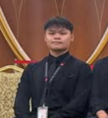

About Us
Name: Torres Zhao Ning CHAN
Student ID: 105804854
In this project, I was responsible for building the overall HTML framework of the website, including the navigation bar and footer, and ensuring their consistency across all pages to enhance the user's visual experience. I focused on the design of page structure and layout to make the interface more aesthetically pleasing, while also emphasizing code quality and avoiding the use of unnecessary elements. My design goal was to create a competitive atmosphere similar to that of professional sports brands like Nike, so the color scheme was kept as simple as possible, primarily black and white, avoiding overly flashy colors. My takeaway from this project was the ability to design more visually appealing pages. This not only boosted my confidence in the practical application of HTML and CSS but also improved my skills in layout planning and visual design.
Name: Siang Chai CHUNG
Student ID: 105802308

In this project, I was responsible for most of the JavaScript code, including product displays and CSS. I also participated in discussions and offered suggestions, such as the placement of product displays on the homepage. This assignment boosted my confidence in JavaScript and allowed me to offer feedback from a third-party perspective.